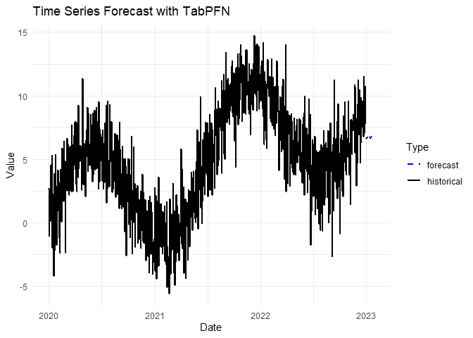

Time Series Forecasting
Cedric Bouffard
2026-02-21
Source:vignettes/time-series-forecasting.Rmd
time-series-forecasting.RmdIntroduction
The rtabpfn package now includes zero-shot time series
forecasting capabilities through the tabpfn-time-series
Python package. This implementation provides:
- Zero-shot forecasting - No training required, works out of the box
- Probabilistic forecasts - Native quantile predictions for uncertainty quantification
- Point forecasts - Both mean and median predictions
- Automatic feature extraction - Temporal, calendar, and seasonal features
- Multiple time series support - Forecast multiple series simultaneously
- Tidymodels integration - Compatible with tidymodels workflow
Time series forecasting with TabPFN-TS works by reframing forecasting as a tabular regression problem. The model automatically extracts relevant features and uses TabPFN’s powerful foundation model to generate forecasts.
Setup
First, ensure you have the required Python package installed:
# Install tabpfn-time-series when setting up rtabpfn
setup_tabpfn(install_time_series = TRUE)
# Verify installation
check_time_series_available()Basic Usage
Single Time Series
For a single time series, provide a data frame with a date column and a value column:
# Create sample time series data
dates <- seq(as.Date("2020-01-01"), as.Date("2020-12-31"), by = "day")
trend <- seq(0, 10, length.out = length(dates))
seasonal <- sin(seq(0, 4*pi, length.out = length(dates))) * 5
noise <- rnorm(length(dates), 0, 2)
values <- trend + seasonal + noise
ts_data <- tibble(
date = dates,
value = values
)
head(ts_data)
#> # A tibble: 6 × 2
#> date value
#> <date> <dbl>
#> 1 2020-01-01 -2.80
#> 2 2020-01-02 0.710
#> 3 2020-01-03 -4.48
#> 4 2020-01-04 0.587
#> 5 2020-01-05 2.04
#> 6 2020-01-06 3.29Train the forecasting model and generate predictions:
# Train forecasting model (using client mode by default)
model <- tab_pfn_time_series(
train_df = ts_data,
prediction_length = 30,
quantiles = c(0.1, 0.5, 0.9),
tabpfn_mode = "local",
verbose = TRUE
)
#> Creating TabPFN Time Series Forecasting Model\n\nAdding automatic temporal features...\nComputing temporal features for local mode...
#> Initializing TabPFNTimeSeriesPredictor...
#> Mode: local
#> Output selection: median
#> \nTime series model ready!\n
# Generate forecasts
forecasts <- predict(model, new_data = ts_data)
#> Generating forecasts...\nForecasts generated successfully!\n
head(forecasts)
#> # A tibble: 6 × 5
#> target `0.1` `0.5` `0.9` date
#> <dbl> <dbl> <dbl> <dbl> <dttm>
#> 1 5.94 0.294 5.94 12.4 2020-12-31 19:00:00
#> 2 5.86 0.252 5.86 12.5 2021-01-01 19:00:00
#> 3 5.82 0.244 5.82 12.5 2021-01-02 19:00:00
#> 4 5.86 0.116 5.86 12.9 2021-01-03 19:00:00
#> 5 5.78 0.0664 5.78 12.8 2021-01-04 19:00:00
#> 6 5.75 0.0186 5.75 12.8 2021-01-05 19:00:00The model automatically: - Detects the date and value columns - Infers the time series frequency - Extracts temporal features (running index, calendar, seasonal) - Generates point forecasts and quantile predictions
Visualizing Forecasts
# Create complete example with data and forecasting
set.seed(42)
dates <- seq(as.Date("2020-01-01"), as.Date("2022-12-31"), by = "day")
trend <- seq(0, 10, length.out = length(dates))
seasonal <- sin(seq(0, 4*pi, length.out = length(dates))) * 5
noise <- rnorm(length(dates), 0, 2)
values <- trend + seasonal + noise
example_data <- tibble(
date = dates,
value = values
)
# Train forecasting model
model_example <- tab_pfn_time_series(
train_df = example_data,
prediction_length = 30,
quantiles = c(0.1, 0.5, 0.9),
verbose = FALSE
)
# Generate forecasts
forecasts_example <- predict(model_example, example_data)
#> Generating forecasts...\nForecasts generated successfully!\n
# Prepare data for plotting
historical <- example_data %>%
mutate(type = "historical") %>%
rename(forecast = value)
plot_data <- forecasts_example %>%
select(date, forecast = `0.5`) %>%
mutate(type = "forecast")
ggplot() +
geom_line(data = historical, aes(x = date, y = forecast, color = type), size = 0.8) +
geom_line(data = plot_data, aes(x = date, y = forecast, color = type),
linetype = "dashed", size = 0.8) +
labs(
title = "Time Series Forecast with TabPFN",
x = "Date",
y = "Value",
color = "Type"
) +
scale_color_manual(values = c("historical" = "black", "forecast" = "blue")) +
theme_minimal()
Historical data with forecast
Multiple Time Series
For forecasting multiple time series, include an item_id
column:
# Create multiple time series
set.seed(123)
dates <- seq(as.Date("2020-01-01"), as.Date("2022-12-31"), by = "day")
multi_ts_data <- tibble(
item_id = rep(c("Product A", "Product B", "Product C"), each = length(dates)),
date = rep(dates, 3),
value = c(
sin(seq(0, 4*pi, length.out = length(dates))) * 10 + rnorm(length(dates), 0, 1),
cos(seq(0, 4*pi, length.out = length(dates))) * 10 + rnorm(length(dates), 0, 1),
sin(seq(0, 4*pi, length.out = length(dates))) * 15 + rnorm(length(dates), 0, 2)
)
)
# Train model
model_multi <- tab_pfn_time_series(
train_df = multi_ts_data,
prediction_length = 30,
quantiles = c(0.1, 0.5, 0.9),
item_id_col = "item_id",
verbose = TRUE
)
#> Creating TabPFN Time Series Forecasting Model\n\nAdding automatic temporal features...\nComputing temporal features for local mode...
#> Initializing TabPFNTimeSeriesPredictor...
#> Mode: local
#> Output selection: median
#> \nTime series model ready!\n
# Generate forecasts
forecasts_multi <- predict(model_multi, new_data = multi_ts_data)
#> Generating forecasts...\nForecasts generated successfully!\n
head(forecasts_multi)
#> # A tibble: 6 × 5
#> target `0.1` `0.5` `0.9` date
#> <dbl> <dbl> <dbl> <dbl> <dttm>
#> 1 -2.11 -23.5 -2.11 23.9 2022-12-31 19:00:00
#> 2 -2.09 -23.6 -2.09 24.0 2023-01-01 19:00:00
#> 3 -2.05 -23.3 -2.05 23.6 2023-01-02 19:00:00
#> 4 -2.03 -23.1 -2.03 23.5 2023-01-03 19:00:00
#> 5 -2.09 -22.9 -2.09 23.2 2023-01-04 19:00:00
#> 6 -2.09 -22.8 -2.09 23.0 2023-01-05 19:00:00Probabilistic Forecasting
TabPFN-TS provides native support for probabilistic forecasting through quantile predictions. This is essential for risk assessment and decision-making under uncertainty.
# Request multiple quantiles for probabilistic forecasts
model_quantiles <- tab_pfn_time_series(
train_df = ts_data,
prediction_length = 30,
quantiles = c(0.05, 0.1, 0.25, 0.5, 0.75, 0.9, 0.95),
verbose = FALSE
)
forecasts_quantiles <- predict(model_quantiles, ts_data)
#> Generating forecasts...\nForecasts generated successfully!\n
# 95% prediction interval
head(forecasts_quantiles)
#> # A tibble: 6 × 9
#> target `0.05` `0.1` `0.25` `0.5` `0.75` `0.9` `0.95` date
#> <dbl> <dbl> <dbl> <dbl> <dbl> <dbl> <dbl> <dbl> <dttm>
#> 1 5.94 -1.60 0.294 2.90 5.94 9.28 12.4 14.4 2020-12-31 19:00:00
#> 2 5.86 -1.62 0.252 2.84 5.86 9.24 12.5 14.5 2021-01-01 19:00:00
#> 3 5.82 -1.61 0.244 2.81 5.82 9.24 12.5 14.6 2021-01-02 19:00:00
#> 4 5.86 -1.82 0.116 2.76 5.86 9.49 12.9 15.0 2021-01-03 19:00:00
#> 5 5.78 -1.86 0.0664 2.70 5.78 9.35 12.8 15.0 2021-01-04 19:00:00
#> 6 5.75 -1.91 0.0186 2.67 5.75 9.32 12.8 15.0 2021-01-05 19:00:00The quantile columns are named .pred_qXXX where XXX is
the quantile as a percentage: - .pred_q050 - 5th percentile
(lower bound) - .pred_q100 - 10th percentile -
.pred_q250 - 25th percentile - .pred_q500 -
50th percentile (median) - .pred_q750 - 75th percentile -
.pred_q900 - 90th percentile - .pred_q950 -
95th percentile (upper bound)
Tidymodels Integration
The time series forecasting functionality is fully integrated with the tidymodels ecosystem, allowing you to use TabPFN-TS in workflows, tune parameters, and compare with other models.
Basic Tidymodels Workflow
# Create model specification
ts_spec <- tab_pfn_ts(mode = "regression") %>%
set_engine("tabpfn_ts") %>%
set_args(
prediction_length = 30,
quantiles = c(0.1, 0.5, 0.9),
tabpfn_mode = "client",
tabpfn_output_selection = "median"
)
# Fit model - columns are auto-detected
ts_fit <- fit(ts_spec, data = ts_data)
# Generate predictions
tidymodels_forecasts <- predict(ts_fit, ts_data)
head(tidymodels_forecasts)
#> # A tibble: 6 × 5
#> target `0.1` `0.5` `0.9` date
#> <dbl> <dbl> <dbl> <dbl> <dttm>
#> 1 5.94 0.294 5.94 12.4 2020-12-31 19:00:00
#> 2 5.86 0.252 5.86 12.5 2021-01-01 19:00:00
#> 3 5.82 0.244 5.82 12.5 2021-01-02 19:00:00
#> 4 5.86 0.116 5.86 12.9 2021-01-03 19:00:00
#> 5 5.78 0.0664 5.78 12.8 2021-01-04 19:00:00
#> 6 5.75 0.0186 5.75 12.8 2021-01-05 19:00:00Using with Workflows
# Create a simple workflow
ts_wf <- workflow() %>%
add_model(ts_spec) %>%
add_formula(value ~ date)
ts_fit <- fit(ts_wf, data = ts_data)Comparing Models
# Create different model specifications
median_spec <- tab_pfn_ts(mode = "regression") %>%
set_engine("tabpfn_ts") %>%
set_args(prediction_length = 30, tabpfn_output_selection = "median")
mean_spec <- tab_pfn_ts(mode = "regression") %>%
set_engine("tabpfn_ts") %>%
set_args(prediction_length = 30, tabpfn_output_selection = "mean")
# Fit both models (columns auto-detected)
median_fit <- fit(median_spec, data = ts_data)
mean_fit <- fit(mean_spec, data = ts_data)
# Compare forecasts
median_preds <- predict(median_fit, ts_data)
mean_preds <- predict(mean_fit, ts_data)Advanced Features
Custom Date and Value Columns
By default, the function auto-detects date and value columns. You can explicitly specify them:
# Custom column names
ts_data_custom <- tibble(
datetime = as.POSIXct(dates),
sales = values
)
model_custom <- tab_pfn_time_series(
train_df = ts_data_custom,
prediction_length = 30,
date_col = "datetime",
value_col = "sales",
verbose = FALSE
)TabPFN Mode
Choose between client mode (default, faster, no GPU needed) or local mode (requires GPU):
# Client mode - uses tabpfn-client API, no GPU required
model_client <- tab_pfn_time_series(
train_df = ts_data,
prediction_length = 30,
tabpfn_mode = "client",
verbose = FALSE
)
# Local mode - requires local TabPFN installation, can use GPU
# Note: Using smaller dataset for local mode to avoid memory issues
ts_data_small <- ts_data %>% slice_head(90) # Use ~3 months for local mode
model_local <- tab_pfn_time_series(
train_df = ts_data_small,
prediction_length = 30,
tabpfn_mode = "local",
verbose = FALSE
)Output Selection
Choose between median (default) or mean for point forecasts:
# Median predictions
model_median <- tab_pfn_time_series(
train_df = ts_data,
prediction_length = 30,
tabpfn_output_selection = "median",
verbose = FALSE
)
# Mean predictions
model_mean <- tab_pfn_time_series(
train_df = ts_data,
prediction_length = 30,
tabpfn_output_selection = "mean",
verbose = FALSE
)Function Reference
tab_pfn_time_series()
Main function for creating a time series forecasting model.
tab_pfn_time_series(
train_df,
prediction_length,
quantiles = c(0.1, 0.5, 0.9),
date_col = NULL,
value_col = NULL,
item_id_col = NULL,
tabpfn_mode = "client",
tabpfn_output_selection = "median",
features = NULL,
verbose = TRUE
)Arguments:
-
train_df- Data frame with training data -
prediction_length- Integer, number of steps to forecast -
quantiles- Numeric vector of quantiles for probabilistic forecasting -
date_col- Name of date/datetime column (NULL for auto-detection) -
value_col- Name of value column (NULL for auto-detection) -
item_id_col- Name of item_id column for multiple series -
tabpfn_mode- “client” (default) or “local” -
tabpfn_output_selection- “median” or “mean” -
features- List of features (NULL for automatic) -
verbose- Print progress information
Returns:
A tab_pfn_time_series model object that can be used with
predict().
tab_pfn_ts()
Tidymodels model specification for time series forecasting.
tab_pfn_ts(
mode = "regression",
engine = "tabpfn_ts",
prediction_length = 12,
quantiles = c(0.1, 0.5, 0.9),
tabpfn_mode = "client",
tabpfn_output_selection = "median",
...
)Performance Considerations
- Client mode: Faster, no GPU required, uses TabPFN client API
- Local mode: Can use GPU for faster inference, requires local TabPFN installation
- Multiple series: Forecasting multiple series is more efficient than individual forecasts
- Quantile computation: More quantiles require slightly more computation time
- Prediction length: Longer horizons may take more time but are generally accurate
Troubleshooting
tabpfn-time-series Not Available
If you get an error about tabpfn-time-series not being
available:
# Check if available
check_time_series_available()
# Install if not available
setup_tabpfn(install_time_series = TRUE)
# Or install manually via reticulate
reticulate::py_install("tabpfn-time-series", pip = TRUE)Wrong Python Environment
Ensure you’re using the correct Python environment:
library(reticulate)
# Check current Python
py_config()
# Use your virtual environment
use_python("C:/venvs/tabpfn/Scripts/python.exe", required = TRUE)
# Verify modules are available
py_module_available("tabpfn_time_series")Example: Real-World Scenario
# Simulate sales data with trend and seasonality (smaller dataset for local mode)
set.seed(42)
dates <- seq(as.Date("2021-01-01"), as.Date("2021-03-31"), by = "day")
# Add trend, weekly seasonality, and noise
trend <- seq(100, 150, length.out = length(dates))
weekly_seasonal <- sin(lubridate::yday(dates) / 90 * 2 * pi) * 20
noise <- rnorm(length(dates), 0, 15)
sales_data <- tibble(
date = dates,
sales = trend + weekly_seasonal + noise
)
# Train forecasting model (local mode - using smaller dataset)
sales_model <- tab_pfn_time_series(
train_df = sales_data,
prediction_length = 30,
quantiles = c(0.1, 0.5, 0.9),
tabpfn_mode = "local",
verbose = TRUE
)
# Generate forecasts for the next 90 days
sales_forecasts <- predict(sales_model, sales_data)
# Analyze results
summary(sales_forecasts)References
- TabPFN-TS Paper: arXiv:2501.02945
- TabPFN-TS GitHub: https://github.com/PriorLabs/tabpfn-time-series
- Prior Labs: https://priorlabs.ai/
- rtabpfn: https://github.com/cedricbouffard/rtabpfn